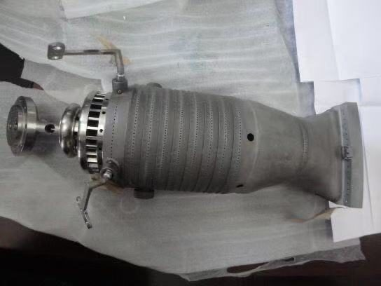

Топливная гибкость: природный газ, водород, синтез-газ
Газовая турбина может работать не только на природном газе. Проектируем и адаптируем машины под водородные смеси, синтез-газ из отходов и биомассы, биогаз и жидкое топливо. Топливную гибкость закладываем в конструкцию на стадии эскизного проекта, а не добавляем потом.

Что определяет переход на другое топливо
Индекс Воббе характеризует тепловую мощность, которую получает горелочное устройство при одном и том же перепаде давления топлива на сопле. Топлива с одинаковым индексом Воббе взаимозаменяемы без перенастройки топливной системы.
У водорода индекс Воббе примерно на 12% ниже, чем у природного газа, поэтому смесь с 20% водорода по объёму не требует замены оборудования. У биогаза и синтез-газа он значительно ниже: им нужна своя топливная система, а синтез-газу и своя камера сгорания.
Индекс Воббе, % от природного газа
Водородные смеси в базовом исполнении машины
Расчёт для агрегата 40 МВт при 8000 часах работы в год.
| H₂, % об. | Доля H₂ по энергии | Изменение индекса Воббе | H₂, т/год | Мощность электролизёра | Изменение выбросов CO₂ |
|---|---|---|---|---|---|
| 10 | 3,4% | −3% | 789 | 5,2 МВт | −3,4% |
| 20 | 7,3% | −5% | 1 710 | 11,2 МВт | −7,3% |
| 30 | 11,8% | −8% | 2 796 | 18,3 МВт | −11,8% |
Смесь с 20% водорода по объёму остаётся в допустимом диапазоне индекса Воббе, при котором не требуется изменения оборудования; смесь с 30% требует доработки топливной системы. Топливная составляющая при 20% водорода: 97 долл./МВт·ч при цене зелёного водорода 2,4 долл./кг и 91 долл./МВт·ч при 1,2 долл./кг.
Синтез-газ из отходов и биомассы
Синтез-газ, полученный газификацией RDF (топлива из твёрдых коммунальных отходов) и биомассы. Отдельное исполнение машины; природный газ остаётся пусковым и резервным топливом.
Синтез-газ не подмешивается к природному газу, а заменяет его: при индексе Воббе на 87% ниже, чем у природного газа, ему нужны своя топливная система и камера сгорания. Объёмный расход синтез-газа в 6,6 раза больше, чем природного газа.
RDF: горючая фракция коммунальных отходов (пластик, бумага, текстиль, древесина), отсортированная, высушенная и измельчённая; низшая теплота сгорания 15–18 МДж/кг. Такое топливо уже производят в промышленных масштабах для цементных печей в большинстве крупных промышленных стран.
| Показатель | Агрегат 40 МВт |
|---|---|
| Сырьё | 275 тыс. т/год RDF или биомассы |
| Комплекс газификации | тепловая мощность 143 МВт, капитальные затраты около 120 млн долл. |
| Расход синтез-газа | 67 600 м³/ч |
| Стоимость топлива | 40–53 долл./МВт·ч против 91 долл./МВт·ч на природном газе, с учётом затрат на газификацию |
| Экономия | 12,2 млн долл. в год; 16,4 млн долл. при плате за приём отходов 15 долл./т |
| Замещение газа | 81,5 млн м³ в год |
| Углерод | биогенная доля углерода учитывается как углеродно-нейтральная |
Капитальные затраты на газификацию приняты по средней точке опубликованных диапазонов (IRENA; MDPI, 2023) за вычетом турбины и оборудования общестанционной части. Плата за приём отходов и цена биомассы с доставкой являются допущениями и подлежат подтверждению у местных операторов по обращению с отходами.
Агрегат 40 МВт на синтез-газе: экономия топлива и выбросы CO₂
Требования к RDF для газификации в кипящем слое
Методы анализа по EN 15400, EN 15403, EN 15408 и EN 15414; классификация по EN 15359.
| Параметр | Требование |
|---|---|
| Низшая теплота сгорания, рабочее состояние | 15,0–18,0 МДж/кг |
| Влажность | < 20% масс. |
| Зольность, сухое состояние | < 15% масс. |
| Выход летучих веществ / связанный углерод, сухое состояние | 65–80% / 7–15% |
| Углерод, сухое состояние | 45–55% |
| Водород / кислород, сухое состояние | 6–9% / 25–35% |
| Азот / сера | < 1,5% / < 0,5% |
| Хлор (критичен из-за хлороводородной коррозии) | < 0,8% |
| Размер частиц d95 | < 30 мм |
| Насыпная плотность | 150–350 кг/м³ |
| Чёрные / цветные металлы / инертные примеси | < 0,5% / < 0,5% / < 5% |
Расскажите о задаче
Первая консультация бесплатна: один-два звонка, чтобы уточнить задачу и исходные ограничения. Затем направляем техническое предложение с объёмом работ, сроками и стоимостью.